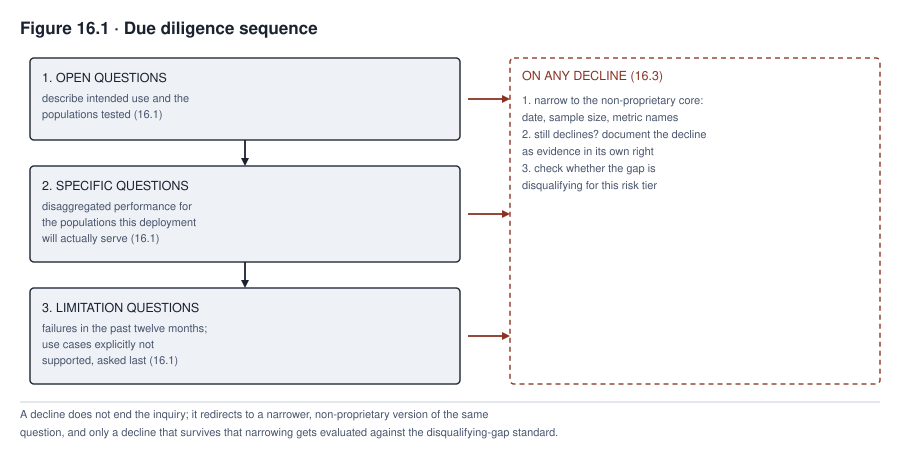

16. Third-Party, Vendor, and Supply Chain Governance
Consider a constructed scenario, continuing the running cases. Calloway Industries did not build TalentScreen. It licensed the resume-screening and candidate-ranking tool from a vendor, and licensing it did not by itself settle who would bear the cost if a disparate-impact claim under Title VII ever arrived. An employer’s own use of a hiring tool typically remains its own exposure, regardless of who built the tool. How far that exposure also extends to the vendor depends on the claim, the jurisdiction, the facts, and what the contract actually allocates. Governing a purchased or licensed system is different in kind from the discipline Part II developed for a system an organization controls end to end. It requires due diligence conducted with a party whose interests are not identical to the deploying organization’s own, and evidence supplied by that same party and requiring independent scrutiny before it can be trusted. It also requires contract terms that either serve governance or leave the organization exposed by omission. Finally, it depends on a supply chain running from a base model through fine-tuning, adapters, and integration to deployment, where visibility to the deploying organization typically runs out well before its legal responsibility does.
This chapter gives the vendor governance discipline in full. It covers how to structure due diligence as inquiry, what an unanswered question actually establishes and what to do about it, and how to evaluate evidence a vendor supplies instead of accepting it. It also covers what contract provisions actually serve governance, how obligation and visibility diverge across a supply chain’s layers, and what a model developer’s own policies quietly inherit into an organization’s product. Finally, it covers where procurement leverage actually comes from across the life of a vendor relationship, not only before signature.
What you will be able to do
- Structure vendor due diligence as a risk-based inquiry using open, specific, and limitation-focused questions as one technique within it, and record what a declined question establishes without assuming why it was declined
- Evaluate vendor-supplied evidence, including a vendor bias audit, by interrogating its methodology, independence, and scope instead of accepting its stated result
- Draft contract provisions that actually serve governance, with defined variables in place of vague placeholders, and identify where procurement leverage exists both before and after signature
- Assess a supply chain’s obligation and visibility at each layer as separately assessed attributes, and identify what a model developer’s own policy terms quietly inherit into an organization’s own product
16.1 Due diligence as structured inquiry
Due diligence is a risk-based process, not a single conversation, and it starts before a vendor is even contacted. That starting work means defining the intended use, the statutory roles involved, the affected people, the system’s criticality, and the evidence a decision will actually require. Inside that process, one effective interview technique moves from open questions that let a vendor’s own framing reveal what it considers important, to specific questions that pin down the details the open answers surfaced. It finishes with limitation questions that name what the vendor is least likely to volunteer, but this sequence is not the whole of due diligence. An open question asked first might ask the vendor to describe the system’s intended use cases and the populations it was developed and tested against. A specific question asked second, once the open answer names a population, asks what the disaggregated performance is, broken out by the specific demographic groups this deployment will actually serve, not the aggregate figure the vendor’s marketing material leads with. A limitation question asks what this system has failed to do correctly in the past twelve months, and what use cases the vendor explicitly declines to support. Material limitation questions belong early enough in the process that a vendor’s answer, or refusal to answer, can still affect the decision. Asked only once relationship momentum has built, the same questions make declining look like the harder path. A due diligence sequence built to make refusal costly for the vendor is a negotiation tactic, not a governance control. This chapter treats the technique as a way to surface information clearly, not as leverage over the vendor’s incentives.
Due diligence closes with a decision, not a completed questionnaire. The accountable risk owner, with the legal, security, privacy, and technical review a system’s risk tier calls for, rejects the relationship, requires remediation, approves it with named conditions and an expiry date, or escalates it. Contracting, onboarding, monitoring, incident response, and exit, sections 16.5 and 16.10 develop each, follow from that decision and do not substitute for it.
16.2 Assessment dimensions
Due diligence assesses, at minimum, four dimensions, and a weak or unclear answer on any one is itself a finding, not automatically a signal of what the vendor is hiding. The provider dimension asks who the vendor is, how long they have operated, and what their financial stability suggests about long-term support. An answer that leaves this unclear is a real gap in the evidence needed for a support and continuity decision, whatever the reason for it. The system dimension asks what the system actually does, on what data it was built, and how it performs across the populations it will encounter. An answer that stays in marketing terms rather than technical specifics leaves that question open. It does not tell you which explanation actually accounts for it, an unflattering technical answer, an incomplete internal understanding, or simply an unpracticed sales process. The documentation dimension asks whether a model card, technical specification, or equivalent artifact exists at all; its absence is itself the finding, not a gap to route around. The compliance dimension asks what regulatory obligations the vendor has already assessed against the deployment’s jurisdiction and sector. A fuller review, proportionate to the system’s risk tier, also reaches data provenance, security and resilience, privacy, safety and accessibility, human-oversight design, subprocessors and dependencies, incident history, intellectual property and licensing terms, business continuity, and exit and portability. A review scoped only to the four core dimensions above should say so explicitly instead of implying completeness it does not have.
16.3 Vendor resistance
A vendor’s interests are not identical to the deploying organization’s, and due diligence has to account for that gap without assuming it resolves in one direction. An unanswered question is evidence of an evidentiary gap, not proof of what caused it, and the record should reflect exactly that distinction. The first useful move is distinguishing a request that touches a genuine trade secret from one that does not. Whether disclosing model architecture or training methodology would expose a protected trade secret depends on the applicable law and the specific facts, not on a fixed, universal boundary. Some jurisdictions and some architectures make that a strong claim, and a deploying organization pressing past a well-founded one is rarely productive without an alternative like a nondisclosure agreement, a clean-room review, or an independent assessor bound by confidentiality. Disaggregated performance figures, documented failure modes, and known limitations sit differently. None of them requires disclosing how the system works internally, and a vendor declining to share information of that kind has left the deploying organization with an unresolved evidentiary gap, whatever the vendor’s actual reason for declining.
What an organization needs from a vendor depends on the system’s risk tier and use, and a short, fixed list understates it. Disaggregated performance, documented failure modes, and known limitations are usually part of that evidence. A consequential deployment typically also needs intended-use scope, version history, training and evaluation provenance, security and privacy posture, human-oversight design, incident history, monitoring and change-management practices, subcontractor dependencies, and applicable licensing and support terms. Specific follow-up questions carry the inquiry further when a vendor first declines a broader request. If a vendor calls an audit’s methodology proprietary, the follow-up asks whether the audit’s date, sample size, and the names of the metrics used can be shared without the underlying calculations. If a vendor declines to share training data, the follow-up asks whether it will share the demographic composition of that data at a summary level. Neither follow-up discloses methodology. A vendor that keeps declining even a narrowed, non-proprietary request has still not resolved the underlying question. The record should state that as an unresolved gap, not as proof the vendor was hiding an unfavorable result. The deploying organization does not need to know why the information was withheld to decide whether it can proceed without it.
Some gaps are disqualifying and should be named that way directly rather than negotiated around indefinitely. Say a vendor will not disclose any disaggregated performance data at all, for a system deployed in a context Chapter 3’s classification would place at meaningful risk tier. That vendor has left the deploying organization with no basis for the risk assessment Chapter 14 requires. Proceeding anyway is proceeding on an unverified assumption rather than on governance. Whether a specific gap is disqualifying depends on the system’s risk tier and what alternative evidence, if any, can substitute for what the vendor withholds. The discipline is deciding this in advance, rather than rationalizing acceptance after the fact because a deployment deadline has already created momentum toward proceeding.
Every declined question should be documented, not discarded, because the record of what a vendor would not answer is itself evidence, useful in exactly the circumstance Chapter 15 anticipates. A later challenge might ask what the organization knew and when. “The vendor declined to answer this and we proceeded on the following alternative basis” is a materially different record than having no record that the question was ever asked. A documented gap is evidence that the question was asked; it is not, on its own, a substitute for the answer, and section 16.4 turns to what happens when a vendor does answer.

Read Figure 16.1 by following both branches, not only the decline branch. An answer is not itself acceptance, and the figure’s affirmative path still runs through verification before reaching the same decision point a decline eventually reaches by a different route.
16.4 Evaluating vendor-supplied evidence
Getting a metric from a vendor is not the same as being able to trust it. A vendor bias audit is built on a chosen methodology, a chosen population, and a chosen metric. Those are choices a vendor with a stake in a favorable result has an incentive to make in its own favor, whether or not it actually did. Chapter 7 established that a fairness metric is a values choice among definitions that can conflict under some distributions and constraints, though several can be reported together to show where they agree and where they diverge. A vendor-supplied audit inherits every question Chapter 7 raised there. Which fairness metric or metrics did the audit use, and would a different one, applied to the identical data, have produced a materially different result. On which population was the audit run, and does that population resemble the specific population this deployment will actually screen, or a more favorable one the vendor happened to have available. Against what threshold was pass or fail determined, and who set that threshold. A vendor audit that answers none of these questions, presenting only a clean top-line result, has supplied a number without the information needed to evaluate whether the number means what it appears to mean. Evaluating that evidence properly also means distinguishing what kind of evidence it is. A vendor’s own self-assessment, a commissioned but vendor-selected auditor, an independent auditor the deploying organization selected or approved, and the deploying organization’s own testing carry different degrees of assurance. Treating any of these as equivalent to another because all of them produced a number is its own error.
16.5 Contract provisions
Several categories of contract provision serve governance directly instead of merely documenting the commercial relationship, and the sample language below illustrates the kind of specificity each needs. A real clause fills in the bracketed variables rather than leaving them as vague placeholders, and legal review should confirm each clause against the applicable jurisdiction and relationship. Information rights convert the disaggregated performance data and known limitations sections 16.1 through 16.4 describe from an informal request into a standing entitlement. A workable clause reads, “Vendor shall provide [named performance metrics, disaggregated by the population categories specified in Schedule X] in [a specified format], covering [the deployment population], no less frequently than [a stated interval]. Vendor shall also provide it within [a stated number] of days following any material change to the System, with [named remediation and escalation rights] if a delivery is late or incomplete”. Audit rights let the deploying organization or an independent party actually verify vendor claims. A workable clause reads, “Customer or an independent auditor meeting [stated independence criteria] may conduct a bias and security audit of the System as deployed, no less frequently than [a stated interval]. The audit may also occur upon [named cause triggers such as a material change or a substantiated complaint], with Vendor providing the technical access, environment, and data specified in Schedule Y, subject to [confidentiality terms]. Findings must be addressed under a remediation timeline stated in the audit report”. Change notification and approval rights address a vendor’s ability to alter a model’s behavior after signature without the deploying organization’s knowledge. A workable clause defines what counts as a material change and sets a notice period for routine changes, while carving out an expedited path for emergency security fixes. It also gives the customer rollback, version-pinning, or a penalty-free decline appropriate to which kind of change occurred, rather than treating every change, urgent or routine, on the same thirty-day clock. Incident cooperation obligates the vendor to participate in Chapter 10’s response procedures. A workable clause defines what counts as an incident, sets a notification clock that shortens for more severe events, and specifies evidence preservation, secure log transfer, and a post-incident report, not a bare “good faith” promise with a single fixed deadline regardless of severity. Liability allocation states who bears the cost of a failure. Liability for a deployment’s effects does not automatically follow the vendor merely because the vendor built the underlying system, nor does it automatically stay with the deploying organization merely because the organization chose to deploy. Exit provisions address data portability, transition support, and verified deletion if the relationship ends. This list is not exhaustive. Scope and permitted use, service levels, security and privacy terms, data location and subprocessor flow-down, intellectual property and licensing, records and regulator access, business continuity, and dispute and remediation procedures round out a complete supplier contract, tailored to what the specific relationship’s risk calls for.
16.6 The supply chain
An AI system purchased today can pass through several layers before reaching deployment, and a base model, a fine-tune, an adapter, an integration, and the deployment itself is one common shape that layering takes, not the only one. A real supply chain can also include data and labeling providers, independent evaluators, a model hosting or cloud provider, a retrieval or grounding source, an orchestration layer, and one or more subprocessors. These can branch and repeat rather than forming a single line. Visibility and legal or reputational responsibility are separate attributes of each layer, not two ends of one fixed gradient, and neither should be assumed without being checked. A deploying organization can have strong visibility into an upstream open model whose weights and documentation are public, and weak visibility into a downstream integrator’s own proprietary wrapper. Visibility therefore has to be assessed layer by layer; it does not decrease steadily with distance from deployment. What generally does hold is that a harm traceable to an upstream layer’s decisions, a base model’s training data, for instance, lands in practice on the deploying organization’s own users. This holds regardless of how many layers of supply chain separate the two, and whatever that layer’s own visibility turned out to be.
Table 16.1 replaces a single obligation-level reading of the supply chain with what actually varies layer by layer. That variation covers the actor’s role, what the deploying organization can actually see into that layer, and what duty attaches there.
Table 16.1. Supply-chain actors, visibility, and duty (a representative example, not a universal template)
| Layer or actor | What the deploying organization typically receives | Visibility into this layer | Duty that typically attaches |
|---|---|---|---|
| Base model developer | Model weights or API access, published documentation | Usually low. Training data and internal decisions are rarely disclosed in full | Developer duties under the applicable regulation (for example, general-purpose-model documentation duties); does not by itself relieve downstream actors of their own duties |
| Fine-tuning or hosting provider | A tuned or hosted variant, a data-processing or subprocessor relationship | Contract-reported unless independently verified; varies by what the contract requires | Duties tied to the actor’s actual role (processor, provider, or distributor) and to what the contract allocates |
| Integrator | The product embedding the tuned model | Usually high for the integration layer itself | Duties tied to whether the integration counts as placing a new or substantially modified system on the market under the applicable regulation |
| Deploying organization | The finished system in its own operating context | Full over its own documented configuration and use; the deployed system’s actual runtime behavior, provider-managed updates, and subprocessor activity still need separate verification | Deployer duties under the applicable regulation, plus operational responsibility for the system’s effects on its own users, regardless of how limited its visibility into upstream layers was |
A role can also change. Substantially modifying a model, rebranding it, or putting it to a materially different intended use can convert a downstream actor into something closer to a provider under some regulations, with the fuller duties that role carries. An organization’s actual duties therefore depend on what it did to the system, not only on where it sits in the chain by default.
16.7 Model developer policy as inherited governance
Chapter 6 established that selecting a model means inheriting the terms attached to it, and this section addresses what to actually do about that inheritance. A frontier developer’s published enterprise-tier terms are a genuine starting point for what might be negotiable, and checking them before assuming any term is open to discussion saves wasted effort. Which specific terms change at which contract size, though, is set by each developer’s own current terms, not by a fixed rule this book can state once and expect to remain accurate. A due diligence checklist works better when it names data retention, training use of customer inputs, and support responsiveness as terms worth checking by name. It should also require the dated, named provider terms actually governing the account in question before relying on any of them. That approach holds up better than a general claim about what enterprise tiers usually include. Since those specific practices vary by provider, product, and configuration, they are exactly the kind of claim this book cannot keep current on its own.
Deprecation risk deserves explicit assessment instead of being discovered when it happens. A developer can retire a model version, and a forced migration to a replacement is not a routine upgrade but a revalidation event. Chapter 14’s reassessment triggers already establish that a material model change requires redoing risk identification and mitigation, and a deprecation-forced migration is exactly that trigger arriving on the developer’s schedule, not the deploying organization’s own. Budgeting for this means holding migration readiness, and the revalidation work a migration will require, as a standing line item rather than an unplanned emergency each time a developer’s roadmap forces the question.
A usage policy that prohibits a use an organization considers legitimate creates a genuine conflict, not a compliance question. The right response is to escalate it as a vendor negotiation point or seek an alternative provider, not to try to route around the restriction. What actually follows from a later-discovered usage-policy violation, whether it voids a specific protection, triggers suspension, or has some other consequence, is a question the actual contract language answers. It is not something this book can state as a uniform rule across contracts. A related and less obvious inheritance is refusal behavior, and it has more than one layer. A foundation model’s underlying safety training sets a policy floor calibrated by the developer against its own broad customer base. The model actually deployed also reflects configurable choices, system instructions, tool policy, and any fine-tuning layered on top. So the refusal behavior an organization observes in its own product is a mix of an inherited policy floor and its own configuration, not a single fixed inheritance. It needs to be tested as the assembled system actually behaves rather than assumed from the base model’s reputation alone. Consider MedAssist’s documentation-assistant extension, built in Chapter 11 on a hosted foundation model. When it refuses a clinically legitimate request because the underlying model’s safety training was calibrated for a general audience, not a clinical one, that refusal is Northfield’s product behavior in the eyes of the clinician who encountered it. This holds regardless of whose safety decision actually produced it. Before permitting patient data near the hosted model, Northfield’s due diligence needs exactly this assessment. It covers what the developer’s policy would and would not allow the system to do, what the organization’s own configuration changes about that, and what disclosure to clinicians the inherited and configured behavior together warrants once deployed.
16.8 Open-weight models
Open-weight models shift the supply chain’s obligation structure instead of simplifying or removing it. License terms vary a lot across open-weight releases, from permissive terms resembling standard open-source licensing to restricted commercial-use terms that function much closer to a proprietary agreement. Assuming every “open-weight” release is the same is a mistake specific organizations have made expensively. What support actually looks like also varies more than the phrase “no vendor” suggests. A community-maintained release with no commercial backer is a different dependency than a commercial open-weight license sold with a support subscription, or a managed hosting arrangement built on open weights. The deploying organization needs to assess which of these it actually has, rather than treat “open-weight” as automatically meaning no counterparty at all. Provenance varies as well. Some open-weight releases document training data and methodology thoroughly, and others disclose almost nothing, leaving the deploying organization to assess a black box regardless of the weights themselves being downloadable. Liability does not automatically land entirely on the deployer merely because there is no purchase contract to allocate it elsewhere. What a specific actor, developer, distributor, integrator, or deployer, actually owes and what it can actually be held liable for depends on jurisdiction, conduct, license terms, modification, and the specific claim. An open-weight developer or an integrator that substantially modified or redistributed the model can retain duties and exposure of its own under some regulations. What is true is that open-weight deployment usually shifts more of the operational load, validation, security, and maintenance work specifically, onto the organization that selects and runs the model, whatever the eventual legal allocation of liability turns out to be. Community viability, whether the model’s maintaining community or organization will continue supporting and patching it, is a real dependency an organization is taking on even when no invoice reflects it. A community that disperses leaves an open-weight deployment in an unsupported position, without even the exit provisions section 16.5 describes as a contractual right.
16.9 Procurement leverage across the relationship
Leverage is often strongest before a contract is signed. A requirement placed in a solicitation document puts every responding vendor in competition to meet it, while an identical request made to an already-selected vendor after signature has lost that competitive pressure. Putting disaggregated performance disclosure, audit rights, and change notification into the solicitation stage specifically, instead of introducing them for the first time at contract negotiation, captures leverage that is harder to recover later. That is not the only leverage a relationship ever has, though. Renewal and expansion negotiations, competitive rebids, an audit finding, a service failure or breach, a regulatory change affecting the vendor’s own obligations, and credible alternative suppliers all create real leverage after signature. Preserving it means building measurable obligations, audit and access rights, termination and portability rights, and tested exit options into the contract itself. That way, a post-signature problem has a contractual lever attached to it, rather than only the hope of the vendor’s continued goodwill. How much leverage actually exists at any point varies with market concentration, switching cost, the system’s criticality, and the specific regulatory context. An organization that waits for a post-signature problem to create leverage from nothing will usually find there is less of it than the solicitation stage offered.
16.10 Ongoing management
Vendor governance does not end at signature. Performance requires the ongoing monitoring Chapter 9 already established, applied to a vendor-supplied system using whatever visibility the contract’s information rights actually secured, against named metrics and thresholds, not an undefined sense of whether things still seem fine. Compliance requires periodically confirming the vendor’s regulatory posture has not shifted as law changes. A vendor’s compliance assessment at signature can age in exactly the way Chapter 14’s reassessment triggers describe for an individual system’s own risk assessment. Relationship management means maintaining enough ongoing contact, and enough visibility into the vendor’s own financial condition, subcontractor changes, and concentration risk, that a vendor’s material changes or business instability surface before they become a surprise, with a named owner responsible for noticing. Reassessment, on the same trigger logic Chapter 14 established for any system regardless of how it was acquired, applies fully to a purchased system. A vendor’s model update, an extension to a new population, a control failure, or elapsed time all trigger the same redone assessment a build-path system would require. Ending the relationship needs the same deliberateness as starting one. It calls for verified data return or deletion, a rehearsed rather than assumed migration or contingency path, and a closing record of what was learned that feeds back into how the next vendor gets selected. Exit is not an afterthought to a decision that was actually made when the contract was signed.
Table 16.2 replaces a two-tier comparison that would otherwise assert specific provider outcomes with a due-diligence checklist. Every cell is a field to fill in from that organization’s own dated, current provider terms, not a claimed fact this book can state once and expect to remain accurate.
Table 16.2. Contract-tier verification checklist (fields to fill in from the vendor’s own dated, current terms, not asserted outcomes)
| Term to verify | Published term (cite and date) | Actually negotiated term | Evidence date | Owner | Gap or fallback |
|---|---|---|---|---|---|
| Data retention | |||||
| Training use of customer inputs | |||||
| Support responsiveness | |||||
| Refusal and safety calibration | |||||
| Usage policy prohibitions | |||||
| Subprocessor and hosting terms |
Read Table 16.2 as a verification exercise, not a lookup table. Refusal and safety calibration in particular is not fixed at any tier the way a retention period might be, since the assembled system’s behavior also depends on configuration, system instructions, and fine-tuning layered on top of the base model’s policy floor. That row needs testing the actual deployed system, not reading a provider’s general policy statement.
Case in focus: the gaps a vendor would not close
TALENTSCREEN · Hypothetical, following the running cases
Calloway’s due diligence on TalentScreen, conducted before the original manufacturing-floor licensing decision, followed the open-to-specific-to-limitation sequence section 16.1 describes and reached the limitation questions once a working relationship was already established. The vendor answered the open questions readily, describing intended use in general terms, and answered the specific questions about aggregate performance with a clean, favorable summary. The limitation questions produced the friction. Asked for disaggregated performance broken out by race and gender, the vendor stated the underlying bias audit methodology was proprietary and declined to share the disaggregated results at all, only the audit’s overall pass conclusion.
Calloway’s evaluator, applying the narrowing approach section 16.3 describes, asked whether the audit’s date, population size, and metric names could be shared without the proprietary calculations. The vendor agreed to share the date and population size, a national applicant pool from several years prior, but continued declining the metric names and any disaggregated figures, stating this went beyond what the audit contract permitted disclosing even in summary form.
This left Calloway with a decision to make, not a resolved question. The gap was real. No disaggregated evidence existed for Calloway to evaluate, on a system that would be used to screen candidates for a manufacturer with a workforce composition the vendor’s national applicant pool may not have resembled closely. Calloway proceeded anyway, reasoning that the vendor’s aggregate pass result and the contract’s audit rights, negotiated under section 16.5’s approach and permitting Calloway’s own future bias audit, were sufficient mitigation for an initial deployment. Judged against Chapter 14’s own residual-risk acceptance standard, this reasoning does not actually hold up. A future audit right is a plan to obtain evidence later, not evidence that the present risk is acceptable now. The decision as made named no accountable acceptor with the authority to accept a disparate-impact risk, and it set no conditions or expiry on the acceptance. It also considered no alternative to proceeding, among them an independent predeployment evaluation on a more representative sample, a narrower initial population, or delaying deployment until better evidence existed. The declined questions were documented in the due diligence file rather than discarded, which is a real, separate good. It is not the same thing as having made a valid risk decision, and Calloway’s file shows the first without the second.
What followed, traced across Chapters 9 and 14, was the disparity the manufacturing-floor bias audit was never positioned to catch when Calloway extended TalentScreen to its logistics job family without a new assessment. The documented record of the vendor’s original refusal became directly relevant once that disparity surfaced. It established that Calloway had identified the evidentiary gap at the outset and could show precisely what it knew and did not know at the time of the original decision. It had not simply overlooked the question. The record did not prevent the disparity, and it did not, on its own, make the original decision to proceed a sound one. What it did establish is that the exposure was a documented, if inadequately accepted, risk rather than an undetected one, which is worth something in an eventual review. But that is not the same claim as the decision having met Chapter 14’s own standard for accepting it.
Summary
Due diligence is a risk-based process that closes with a decision by an accountable owner, and the open-to-specific-to-limitation question sequence is one useful technique inside it, not the whole of it. It is assessed across at minimum four dimensions, provider, system, documentation, and compliance, with a weak or unclear answer on any one recorded as a gap, not assumed to reveal what the vendor is hiding. Vendor resistance calls for narrowing a declined question to its non-proprietary core, documenting every decline as evidence in its own right, and treating some gaps as disqualifying, without converting an unresolved gap into a claim about the vendor’s motive. Vendor-supplied evidence, including a bias audit, carries the same methodology, population, and threshold choices Chapter 7 raised for any fairness metric, and its assurance value also depends on who performed it, vendor self-assessment, a vendor-selected auditor, an independent one, or the buyer’s own testing.
Several categories of contract provision, information rights, audit rights, change notification, incident cooperation, liability allocation, and exit terms among them, serve governance when their variables are actually specified instead of left as vague placeholders like “reasonable access” or “good faith”. A supply chain can run through several layers, base model, fine-tune, adapter, integration, and deployment among common ones, with visibility and obligation assessed separately at each layer rather than assumed to move in a fixed pattern together. A model developer’s own policy terms are inherited governance. They are worth checking against the vendor’s own current, dated terms, not assumed from a general rule. They are also subject to deprecation risk, which a forced migration turns into a revalidation event. They are also capable of exporting a policy floor, shaped further by the deploying organization’s own configuration, into a product’s behavior. Open-weight models redistribute rather than remove these obligations, with license terms, support, provenance, and liability all depending on the specific release and the specific actor’s conduct rather than following a fixed category rule. Procurement leverage is usually strongest before signature but is not the only leverage a relationship ever has. Ongoing management, performance, compliance, relationship, and reassessment, continues past signature on the same terms Chapter 14 already established for any system, regardless of how it was acquired.
Review questions
COMPREHENSION
State the three-stage due diligence question sequence and explain why it is one technique within a larger due diligence process, not the whole of it.
Name the four core assessment dimensions and explain why a weak answer on the documentation dimension is a finding in itself rather than something to route around.
APPLIED
A vendor declines to share a bias audit’s disaggregated results, citing proprietary methodology. Describe the narrowed follow-up question this chapter would ask next, and state precisely what a continued refusal of that narrower request does and does not establish.
Draft a contract provision serving the information rights category that specifies what a vendor must supply, in what form, and how often, rather than leaving those terms as an unspecified placeholder.
SPOT THE RISK
- An organization discovers, only after a model developer deprecates a version it depends on, that the migration requires substantial revalidation. Identify what this chapter’s guidance says should have prevented the discovery from being a surprise.
COMPARE AND DECIDE
- Compare a hosted commercial model’s obligation structure against an open-weight model’s for support and liability specifically, and state which risk shifts most directly onto the deploying organization under the open-weight option, without assuming liability lands entirely on either party by default.
RUNNING CASE
TALENTSCREENUsing the case in focus, explain what Calloway’s documentation of the vendor’s refusal actually established after the disparity surfaced, and what it did not establish about whether the original decision to proceed was itself sound.
A vendor’s refusal, a supply chain’s obligation gap, and an inherited policy term are all ways an organization’s governance depends on choices made outside its own walls. The book’s final part turns from the specific governance problems Parts II through IV have worked through to the discipline of building and running the governance program itself. It starts with treating that program as something designed and deployed with the same rigor this book has applied to every AI system it has governed.